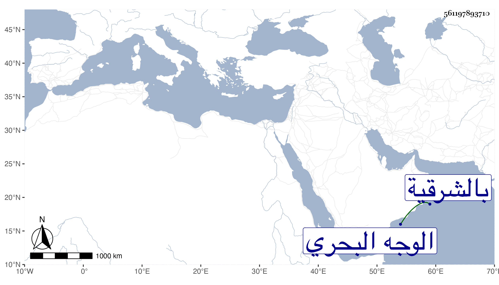

0902Sakhawi.DawLamic.ITO20230111-ara1.EIS1600.561197893710
Biography ID: 561197893710
99
بيبرس بن أحمد بن بقر شيخ العربان بالشرقية من الوجه البحري وعم بقر الماضي قريبا . مات في سلخ المحرم سنة ست وستين عن قريب السبعين ، وكان مليح الوجه طوالا حشما كريما دينا كثير الأدب والتواضع نادرة في أبناء جنسه رحمه الله .
